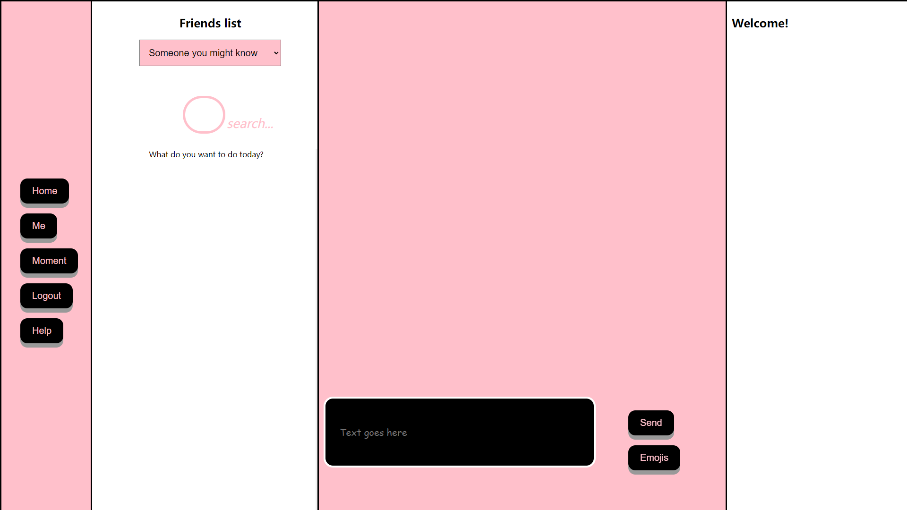
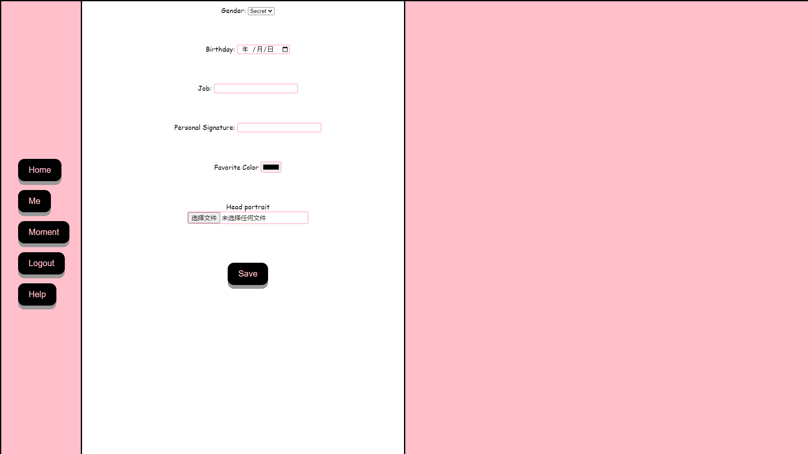
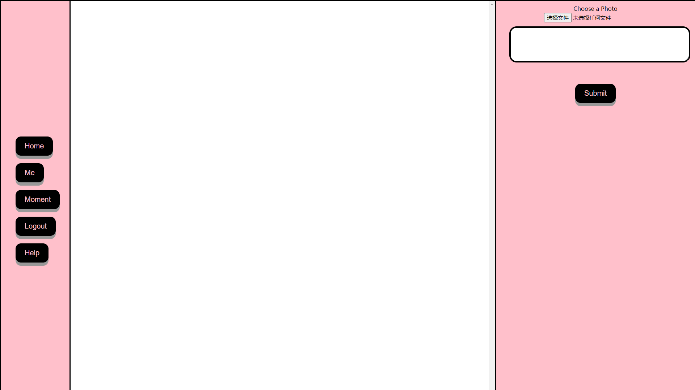
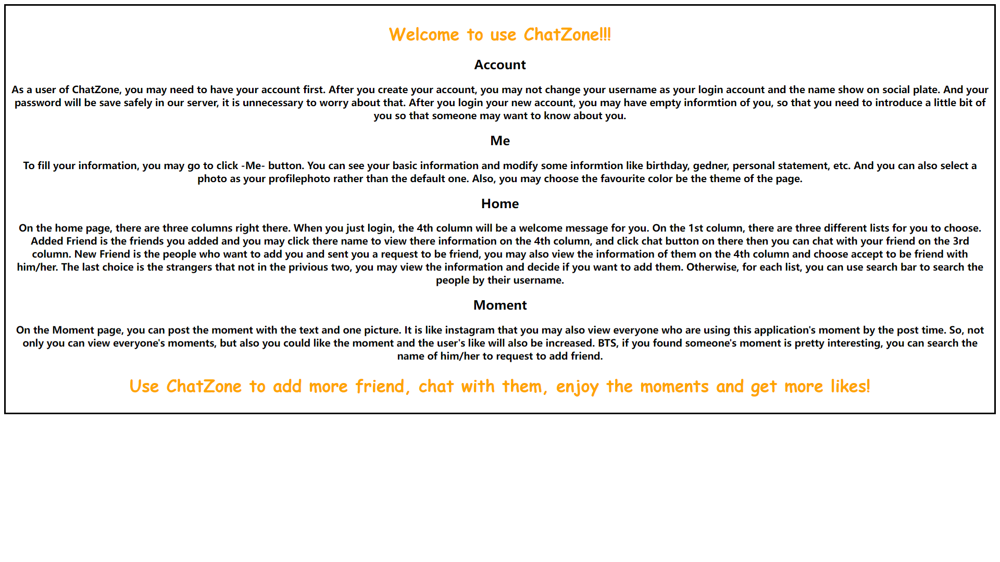

This is an online real-time chat web application, that provides users to log in, add friends, private chat,
friends moments, and other functions. It's mostly done using native Html + CSS + JS. My team members and I
completed this project, which is divided into the front end and back end. After the deployment of the
server, it can achieve complete functions.
Although this project mainly implements the back-end functions, the front-end user interface is also
essential. In the interactive page, we try our best to think about the needs of users, present more
information, and put the key functions in the most important position according to our habits of using chat
software.
Usability
This is every HTML page that the user will use, and basically covers the simple interaction features
required for a basic chat application. In the process of implementing the front-end interface, we also
learned
more about the potential needs of users and imagined what functions they prefer. Then we constantly modified
the interface according to these to achieve better results.
User could sign up and sign in here, and if the user try to access without login,
it will automatically jump here.

Home Page
The left user could search friend and also add new friend here. The middle user
could talk with friend. The right is showing more information.

Account Page
The user could update personal information here include avatar, birthday. And
also change theme of page.

Moments Page
The user could browse all the moments send by other users like Twitter. Also like
or get more information.

Help Page
Providing more helping information to user so that they could familiar with this
application sooner.
Demo
Here is a video that show up how this website application used step by step.
Conclusion
Overall this is a complete development, from the back-end implementation to the front-end's response.
However, the front-end page does not use more good-looking and excellent UI elements, which is relatively
rough. After the functional realization is complete, users' experience and better service can be further
improved according to the needs of users and the experience of the previous works can be referred to.
I believe there will be more perfect works in the future, and more emphasis on the user interaction
interface to improve user experience. The road to learning does not stop, as always continue to move
forward.